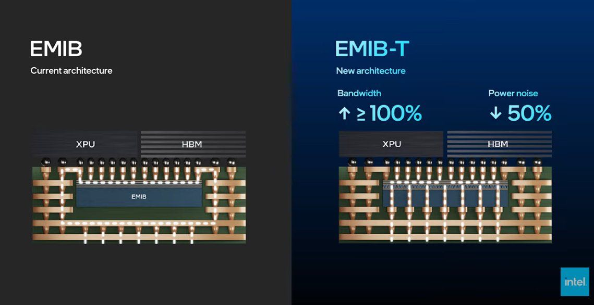

Advanced Packaging • 2026-05-26
EMIB 與 EMIB-T：Intel 先進封裝的水平互連與垂直供電升級
EMIB 是 Intel 的局部矽橋互連；EMIB-T 則是在 EMIB 橋接器中加入 TSV（Through-Silicon Via，矽穿孔），並搭配 MIM 電容器（Metal-Insulator-Metal Capacitor），用來強化垂直供電、改善 reference path，並降低電源雜訊。
一句話結論
EMIB 是局部矽橋
只在晶粒需要高速連接的位置埋入小型矽橋，避免整片矽中介層的成本與尺寸壓力。
EMIB-T 加強供電
除了水平訊號橋，也加入 TSV 垂直導通，搭配 MIM 電容器降低供電阻抗與高頻雜訊。
重點是封裝系統能力
AI 晶片瓶頸不只在運算單元，也會受到 HBM 頻寬、Power Integrity（電源完整性）與封裝良率影響。
結構差異：從高速橋，到高速橋加垂直供電
EMIB：局部水平互連橋（概念示意，非實際剖面規格）
EMIB-T：水平互連加 TSV 垂直供電（概念示意，非實際剖面規格）
為什麼 EMIB-T 有用
EMIB 的核心價值，是用局部矽橋提供比有機基板更高密度的微細線路，讓 XPU 與 HBM 之間能承載大量平行 I/O。它不是整片矽中介層，而是在封裝基板中只於需要高速互連的位置嵌入橋接器。
但當 HBM 頻寬與 XPU 功耗一起上升，封裝內部問題會從「線夠不夠多」延伸到「電源與接地夠不夠穩」。大量 I/O 同時切換時，若 reference path 與供電路徑不佳，容易產生 IR drop、ground bounce 與高頻電源雜訊。
EMIB-T 的升級方向，是在橋接區保留高密度水平訊號，同時加入 TSV，讓供電與接地有更短、更直接的垂直路徑；MIM 電容器則可在局部提供去耦，協助降低高頻雜訊。這些設計有助於降低 PDN 阻抗、改善 reference path，進而提高可用頻寬餘裕。
Intel 簡報宣稱的改善幅度
關鍵概念：看懂 EMIB-T 要抓這幾個字
TSV（矽穿孔）
穿過矽橋的垂直導通路徑。放在 EMIB-T 語境下，重點是讓電源與接地能更直接穿越橋接區，減少繞路。
MIM 電容器
金屬-絕緣層-金屬電容器，可在封裝局部提供去耦，吸收高速切換造成的瞬間電流需求，降低 AC noise。
HBM
高頻寬記憶體（High Bandwidth Memory）。XPU 越依賴 HBM，封裝內部互連頻寬、供電與回流路徑就越重要。
Power Integrity
電源完整性。關心的是供電網路能否在高速切換與高功耗下維持穩定電壓，避免影響訊號與時序餘裕。
Reference path
高速訊號需要穩定的返回/參考路徑。若回流路徑不連續，訊號看到的參考電位會抖動，造成雜訊與時序問題。
IR drop 與 ground bounce
IR drop 是供電路徑阻抗造成的壓降；ground bounce 則是接地回流在高速切換時產生的電位跳動。兩者都會侵蝕設計餘裕。
技術比較
| 封裝路線 | 核心做法 | 優勢 | 代價或限制 | 適合場景 |
|---|---|---|---|---|
| 有機基板 | 晶粒透過封裝基板走線互連 | 成本較低、成熟度高 | 線寬與線距限制，高頻寬密度較低 | 一般多晶粒封裝 |
| EMIB | 局部埋入矽橋，連接相鄰晶粒 | 比全矽中介層更具成本與面積彈性，仍有高密度互連 | 垂直供電與接地路徑會受到橋接區配置影響 | XPU 與 HBM 局部高速互連 |
| EMIB-T | 在 EMIB 橋接器中加入 TSV，並搭配 MIM 電容器改善供電 | Intel 簡報宣稱可提高頻寬並降低電源雜訊 | 測試條件未完整揭露，製程與封裝整合更複雜，量產良率需驗證 | 高功耗 XPU、HBM4 與高頻寬多晶粒封裝 |
| EMIB-M | 在 EMIB 矽橋中整合 MIM 電容器 | 改善局部去耦與電源完整性 | 主要補強供電，仍需搭配系統級 PDN 設計 | 需要更好 AC noise 控制的多晶粒封裝 |
| 矽中介層 / CoWoS 類路線 | 以大面積矽中介層承載多晶粒互連 | 互連密度高、路由彈性強，適合 HBM 密集整合 | 成本、尺寸、產能與良率壓力較高 | 大型 AI GPU、HBM 密集封裝 |
指標解讀：頻寬翻倍不等於整機效能翻倍
Bandwidth ↑ ≥ 100%
這是 Intel 簡報宣稱，代表在其比較條件下，XPU 與 HBM 間的封裝互連頻寬有機會達到至少倍增。限制是測試條件、封裝尺寸、I/O 配置與工作負載未完整揭露，不能直接推論為系統效能倍增。
Power noise ↓ 50%
這也是 Intel 簡報宣稱，表示在其量測條件下，供電網路上的瞬間電壓波動可降低。限制是未看到完整量測頻段、負載切換模式、封裝堆疊與去耦配置，因此應視為方向性訊號。
Power noise 可以怎麼理解
當 XPU 與 HBM 之間大量 I/O 同時切換，電流會瞬間變動。若供電與接地路徑阻抗太高，直流壓降會形成 IR drop；高速切換時的回流不順，會造成 ground bounce 或 simultaneous switching noise。reference path 越乾淨，訊號線看到的參考電位越穩，眼圖與時序餘裕通常越好。EMIB-T 透過 TSV 縮短垂直供電/接地路徑，並以 MIM 電容器提供局部去耦，合理方向是降低這類波動。
產業意義：補強高頻寬、多晶粒封裝的路線彈性
AI 加速器的實際表現不只取決於 XPU 裡的運算單元。HBM 放得近不近、互連密度夠不夠、Power Integrity 是否穩定、散熱是否壓得住，都會影響可用效能。
台積電（TSMC）CoWoS 類路線以大面積矽中介層支援高密度 HBM 整合；Intel 的 EMIB、EMIB-M、EMIB-T 與 Foveros 則提供另一組較模組化的封裝工具箱。兩者比較時，應分開看互連密度、供電路徑、成本、尺寸與量產成熟度。
EMIB-T 的技術價值，在於補強高頻寬、多晶粒封裝的路線彈性：它試圖在局部矽橋的成本/面積彈性下，補上 HBM 世代演進所需要的垂直供電與低雜訊能力。這是封裝選項的擴充，不宜直接寫成單一路線勝負判斷。
盲點與驗證重點
- 宣稱值條件：Bandwidth ↑ ≥ 100% 與 Power noise ↓ 50% 為 Intel 簡報宣稱，需看測試條件、封裝尺寸、I/O 配置、HBM 數量、量測頻段與功耗設定。
- 系統效能：封裝頻寬翻倍不代表 AI 晶片效能翻倍，還要看記憶體控制器、軟體堆疊與模型工作負載。
- 良率與成本：更複雜的橋接與垂直導通結構，可能提高封裝良率與測試挑戰。
- 散熱耦合：供電更穩不等於散熱問題消失；高 HBM 數量與高 XPU 功耗仍會推高熱設計壓力。
- 供應鏈成熟度：真正關鍵是能不能穩定量產，而不只是技術簡報上的結構優勢。
- EMIB-M 與 MIM 電容器：若目標是降低 AC noise，MIM 電容器與 TSV 的搭配很重要；只談 TSV 容易低估局部去耦的角色。
- HBM 垂直供電需求：HBM 世代演進會推高 I/O 與供電需求，EMIB-T 的價值應放在 HBM4/UCIe 類高頻寬場景下評估。
來源

本報告為封裝工程概念解讀，非 Intel 官方規格書逐字轉述。內文中的結構圖為輔助理解的抽象示意，非實際剖面規格；應以原始圖、Intel 正式技術文件與產品規格作為最終依據。